Nanoparticules
Les nanomatériaux (au moins une dimension entre 1 et 100 nm) présentent des propriétés physico-chimiques uniques qui modifient leur comportement toxicologique : la masse ne suffit plus, ce sont la surface, le nombre et la forme qui gouvernent l'effet biologique. Les données sont encore en construction ; les voies respiratoire et cutanée sont les principales en milieu de travail. En mine, les nanoparticules dominantes sont incidentes : fumées de soudage et matière particulaire diesel (DPM), qui sont composées en majorité de particules ultrafines.
Table des matières
- Définitions
- Types et sources
- Comportement dans l'air
- Toxicité particulière
- Prévention en entreprise
- Application terrain
- Ressources
Définitions
Selon la Commission européenne, un nanomatériau est un matériau naturel, accidentel ou manufacturé contenant des particules dont au moins 50 % (en nombre) ont
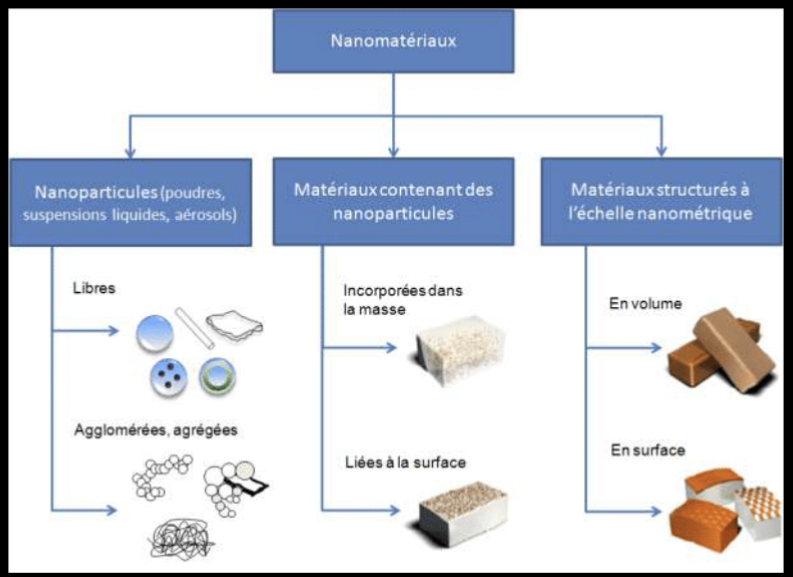
Toucher l'image pour l'agrandir| Forme | Critère |
|---|---|
| Sphérique | 1 à 100 nm dans une ou plusieurs dimensions externes |
| Allongée (fibres, tubes) | Deux dimensions < 1 nm et autre > 100 nm |
| Plaquettes / feuillets | Une dimension < 1 nm, les autres > 100 nm |
Nanoparticule : objet dont les 3 dimensions sont à l'échelle nano.
Nanoobjet : terme générique incluant nanoparticules, nanofibres, nanotubes, nanofeuillets.
L'INRS distingue
- Naturels : pollens, embruns, virus, certaines structures biologiques.
- Anthropiques (incidents) : particules ultrafines (PUF) de combustion (diesel, fumée de soudage, feux), fumée de cigarette.
- Manufacturés : produits intentionnellement (nano-TiO2, nano-Ag, nanotubes de carbone, nano-SiO2, etc.).
Types et sources
| Type | Exemples | Usages |
|---|---|---|
| Métalliques | Nano-or, nano-argent, nano-cuivre | Catalyseurs, antimicrobien (textiles, plastiques) |
| Oxydes métalliques | TiO2, ZnO, SiO2, Fe2O3 | Crèmes solaires, cosmétiques, peintures, additifs |
| Carbonés | Nanotubes (SWCNT, MWCNT), fullerènes, graphène | Composites, électronique, batteries |
| Polymères | Nanocapsules, dendrimères | Pharmaceutique, libération contrôlée |
| Quantum dots | Nanocristaux semi-conducteurs | Imagerie, écrans |
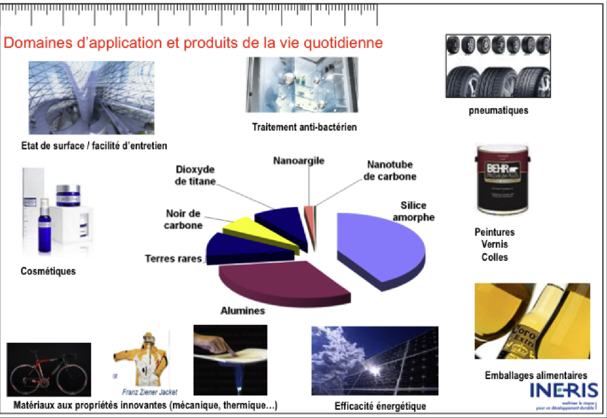
Toucher l'image pour l'agrandir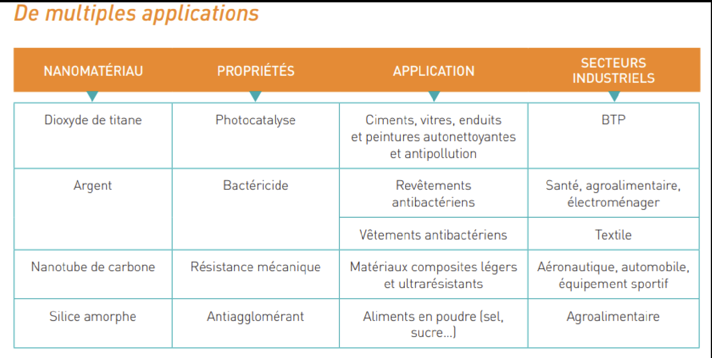
Toucher l'image pour l'agrandirAu Québec (IRSST 2014) : plusieurs centaines d'entreprises identifiées comme manipulant ou produisant des nanomatériaux (recherche, industrie chimique, plasturgie).
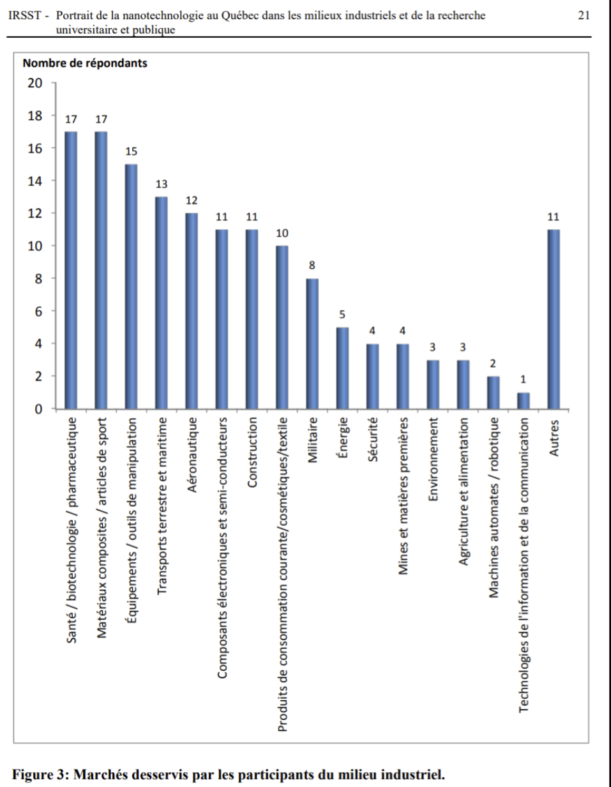
Toucher l'image pour l'agrandir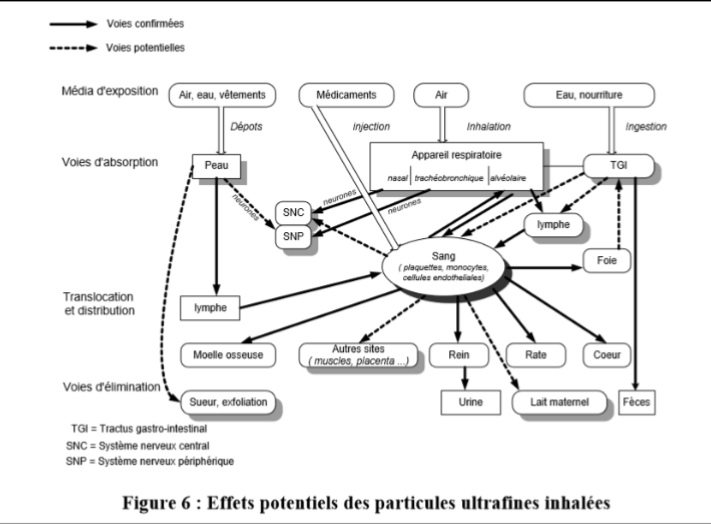
Toucher l'image pour l'agrandirComportement dans l'air
Particularités vs poussières classiques
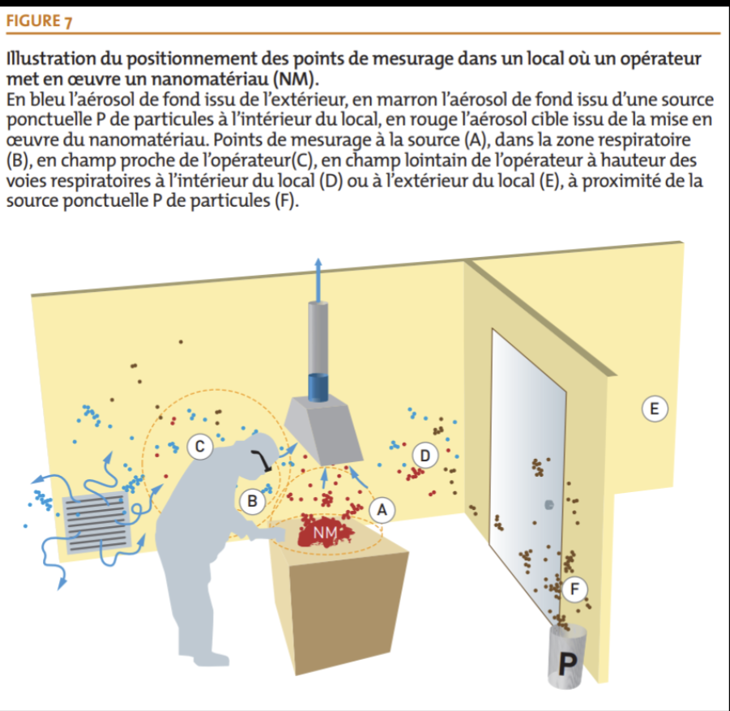
Toucher l'image pour l'agrandir| Comportement | Description |
|---|---|
| Diffusion brownienne | Mouvement aléatoire similaire à un gaz/vapeur ; contamine rapidement l'aire de travail |
| Diffusion à grande distance | Avant déposition |
| Tendance à l'agglomération | Au contact d'autres particules, formant des agrégats plus gros |
| Forte remise en suspension | Très facile au moindre courant d'air |
| Très faible déposition gravitationnelle | Restent longtemps en suspension |
Conséquence pour la mesure : la métrologie classique (gravimétrie de masse, MMAD) est inadaptée. Outils spécifiques : compteurs de particules (CPC), mobilité électrique (SMPS), microscopie électronique (MET).
Toxicité particulière
Pourquoi les NP sont-elles plus toxiques à masse égale ?
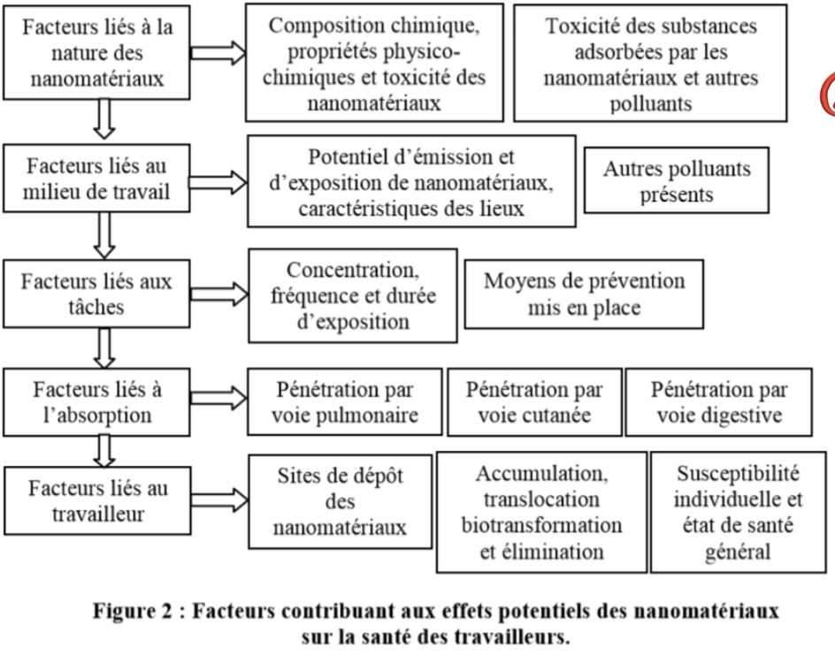
Toucher l'image pour l'agrandir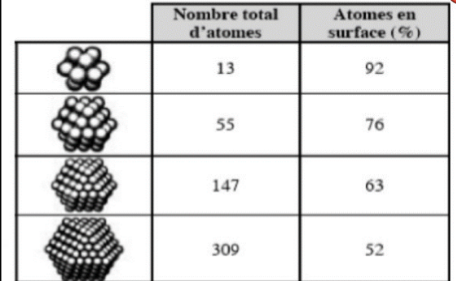
Toucher l'image pour l'agrandir- Surface spécifique : ↑ rapport surface/volume → plus d'interactions biologiques, production accrue de radicaux libres (ROS).
- Nombre de particules : à masse égale, beaucoup plus de particules.
- Forme : fibres longues et fines = effet « Amiante-like » (mésothéliome pour certains MWCNT).
- Pénétration accrue : capacité à traverser des barrières (alvéoles, peau, hémato-encéphalique, placentaire).
- Réactivité chimique de surface modifiée par la taille.
- Effets « Trojan horse » : transport d'autres toxiques liés à leur surface.
Voies d'exposition et effets
| Voie | Particularité |
|---|---|
| Respiratoire | Voie principale. Déposition par diffusion (aussi dans les alvéoles). Inflammation pulmonaire, fibrose, granulomes. Translocation systémique possible (sang, cerveau via nerf olfactif). |
| Cutanée | Limitée pour la peau saine, mais possible si peau lésée, ou via follicules pileux pour certaines NP. |
| Digestive | Translocation intestinale partielle. Microbiote affecté possible. |
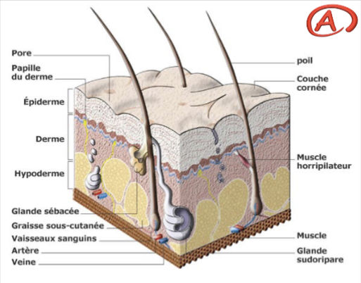
Toucher l'image pour l'agrandirEffets démontrés ou suspects
- Inflammation pulmonaire (TiO2, SiO2, CNT).
- Fibrose pulmonaire (CNT, certaines nanofibres).
- Granulomes (CNT).
- Cancer poumon, mésothéliome (MWCNT à haut rapport L/D, CIRC 2B pour MWCNT-7).
- Stress oxydatif systémique.
- Effets cardiovasculaires (inflammation systémique).
- Translocation au cerveau via nerf olfactif (nano-MnO2, autres).
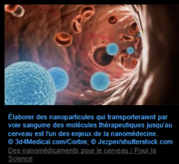
Toucher l'image pour l'agrandir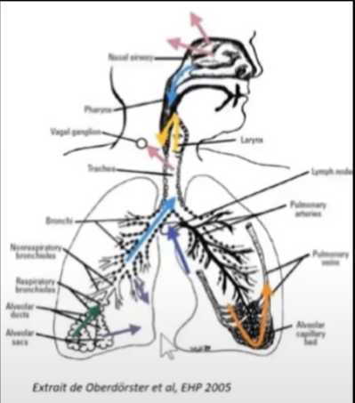
Toucher l'image pour l'agrandirClassification CIRC
- TiO2 : groupe 2B.
- Negro de carbone : groupe 2B.
- Fibres de nitrure de potassium, MWCNT-7 : groupe 2B.
- Beaucoup d'autres NP : données insuffisantes.
Prévention en entreprise
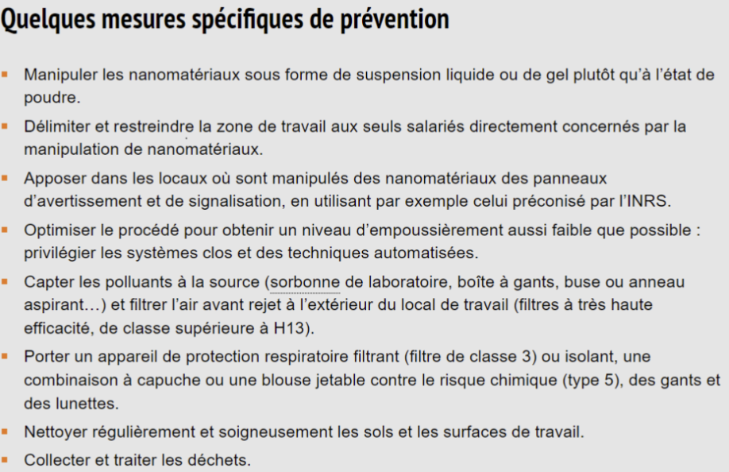
Toucher l'image pour l'agrandirL'INRS et l'IRSST recommandent l'approche graduée (control banding) en l'absence de VLE spécifiques pour la majorité des NP.
Hiérarchie des moyens
- Substitution : éviter les NP si l'objectif fonctionnel le permet.
- Travail en système clos : boîtes à gants, enceintes confinées.
- Ventilation locale aspirante : hottes à flux laminaire, captage à la source.
- EPI respiratoire : masques P100 ou ventilation assistée (PAPR) ; les filtres HEPA arrêtent les NP même très fines (mécanisme de diffusion).
- EPI cutané : gants étanches (nitrile double, butyle), combinaisons Tyvek.
- Hygiène stricte : vêtements de travail, douches, nettoyage humide (pas de balayage).
- Formation et information des travailleurs.
Référentiels
- NIOSH : Current Intelligence Bulletins (CIB) sur nano-TiO2, CNT.
- INRS : guide ED 6064 et fiches nano.
- IRSST : guides québécois (rapports R-) sur la prévention et la mesure.
- NF ISO/TR 12885 : santé et sécurité au travail avec les nanotechnologies.
Application terrain
L'exposition aux nanoparticules manufacturées est rare en mine. L'enjeu réel est l'exposition aux nanoparticules incidentes issues des procédés.
| Source minière | Type de NP | Mesure prioritaire |
|---|---|---|
| Fumées de soudage (toutes méthodes) | NP métalliques (Fe, Mn, Cr (VI), Ni) en suspension < 1 µm | Ventilation locale aspirante, P100 ou cagoule motorisée |
| Matière particulaire diesel (DPM) souterraine | Negro de carbone + composés organiques sur surface | Électrification flotte, post-traitement (DPF), ventilation primaire |
| Fumées de tirs | Mélange particules ultrafines + NOx | Délai de réentrée, mesure DPM/EC |
| Brasage et coupage plasma | NP métalliques | Captage à la source |
| Atelier d'impression 3D métal (rare, sur certains sites) | NP métalliques | Enceinte fermée, ventilation |
| Nanomatériaux dans certains produits chimiques d'usine (additifs catalyseurs, traceurs) | Variable selon procédé | Inventaire, FDS, control banding |
L'évaluation classique en mg/m³ (gravimétrie) sous-estime la dose en surface de contact biologique. Pour la flotte diesel, la mesure du carbone élémentaire (EC) est devenue le proxy de référence (NIOSH 5040) parce qu'elle capte mieux la composante nano que la masse totale.
Ressources
| Document | Type | Source |
|---|---|---|
| Guide INRS ED 6064 (nano) | Guide | INRS |
| Méthode NIOSH 5040 (carbone élémentaire) | Méthode | NIOSH |
| Stoffenmanager Nano | Outil web | TNO |
| Rapport IRSST R-840 (mesure NP en milieu de travail) | Rapport | IRSST |
Articles wiki connexes
- ADME, cheminement des contaminants dans l'organisme
- Cancérogénicité
- Toxicité du système respiratoire
- Amiante
- Métaux toxiques en milieu de travail
- Outils de priorisation des risques chimiques
- Aérosols
[[Wiki SST/00 - Accueil/�
Pages qui pointent ici (15)
- 🎯 Démarrage rapide, conseiller SST Toxicologie
- 🏠 Wiki Toxicologie, mines Toxicologie
- Aérosols Hygiène industrielle
- Amiante Hygiène industrielle
- Amiante Toxicologie
- Aspiration et dangers biologiques Hygiène industrielle
- Aspiration et dangers biologiques Toxicologie
- Familles de contaminants Toxicologie
- Gestion des moteurs diesel sous terre Toxicologie
- Métaux toxiques en milieu de travail Hygiène industrielle
- Métaux toxiques en milieu de travail Toxicologie
- Outils de priorisation des risques chimiques Hygiène industrielle
- Outils de priorisation des risques chimiques Toxicologie
- Substances dangereuses Toxicologie
- Toxicité du système respiratoire Toxicologie